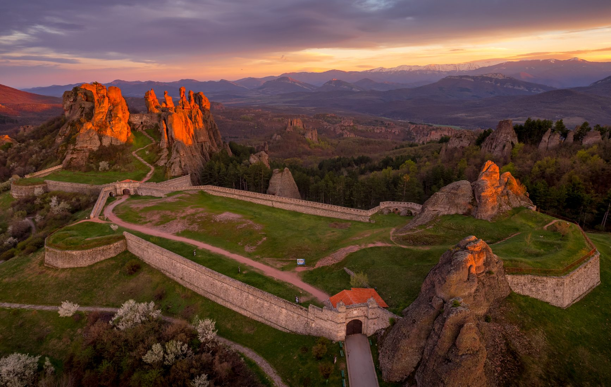

Белоградчѝшките скали са скални форми в Западния Предбалкан, в южното подножие на Белоградчишкия венец, около Белоградчик и селата Боровица, Чифлик и Праужда в област Видин и село Белотинци, област Монтана. Обявени са за природна забележителност през 1949 г. Включени са в списъка на Стоте национални туристически обекта. Включени са в Червената книга на България като уязвимо природно местообитание.
